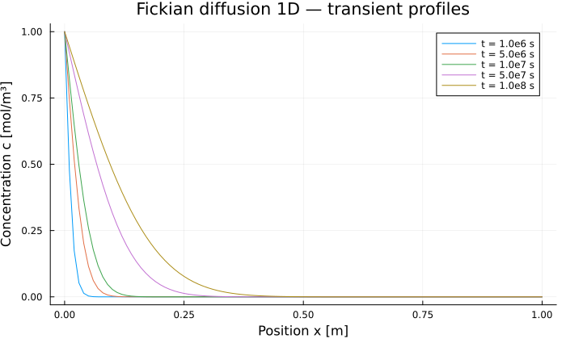

Fickian Diffusion 1D
Diffusion of a solute in a saturated porous medium, on VoronoiFVM.jl. This is the simplest model in the package: one species, a linear equation, and a closed-form reference solution — so it is the case that validates the whole AbstractPoroModel → closures → VoronoiFVM chain.
Physical problem
A solute diffuses into a saturated soil column. The concentration $c$ [mol/m³] is the only unknown, and it obeys
\[\varphi \frac{\partial c}{\partial t} = \nabla \cdot \left(D \varphi \, \nabla c\right)\]
The porosity $\varphi$ cancels, leaving pure diffusion:
\[\frac{\partial c}{\partial t} = D \, \frac{\partial^2 c}{\partial x^2}\]
| Boundary | Condition |
|---|---|
| $x = 0$ (inlet) | Dirichlet $c = c_\text{in}$ |
| $x = L$ (outlet) | Zero Neumann $\partial c / \partial x = 0$ (the VoronoiFVM default) |
The initial condition is $c(x, 0) = 0$, with $c(0, 0) = c_\text{in}$ so that it is consistent with the boundary condition — see the note at the end of this page.
Reference solution
On a semi-infinite domain the solution is
\[c(x, t) = c_\text{in} \operatorname{erfc}\!\left(\frac{x}{2\sqrt{D t}}\right)\]
valid as long as the diffusion front $2\sqrt{Dt}$ stays small compared with $L$.
Parameters
| Symbol | Value | Unit | Description |
|---|---|---|---|
| $\varphi$ | $0.30$ | — | Porosity |
| $D$ | $10^{-10}$ | m²/s | Effective diffusion coefficient |
| $c_\text{in}$ | $1.0$ | mol/m³ | Concentration imposed at the inlet |
| $L$ | $1.0$ | m | Column length |
The characteristic diffusion time is $t_\text{diff} = L^2/D = 10^{10}$ s. The simulation covers $t_\text{end} = 10^8$ s $= t_\text{diff}/100$, an early transient in which the front penetrates only about $2\sqrt{D t_\text{end}} \approx 0.2$ m.
using PoroMechanics
using VoronoiFVM
using ExtendableGridsModel definition
The model is a plain struct holding its material parameters. Multiple dispatch on that struct is what selects the constitutive behaviour below.
"""Parameters of the Fickian diffusion model (saturated porous medium)."""
Base.@kwdef struct FickModel{T} <: AbstractPoroModel
φ::T = 0.30 # porosity [-]
D::T = 1e-10 # effective diffusion coefficient [m²/s]
c_in::T = 1.0 # concentration imposed at x=0 [mol/m³]
end
PoroMechanics.nspecies(::FickModel) = 1
# Differentiating with respect to one parameter turns that field into a `Dual` while the
# others stay `Float64`, so the constructor promotes rather than demanding they match.
FickModel(φ, D, c_in) = FickModel(promote(φ, D, c_in)...)
PoroMechanics.species_names(::FickModel) = [:c]Constitutive behaviour
Three methods are all this model needs. None of them knows about time stepping or assembly, and none of them computes a Jacobian: VoronoiFVM.jl differentiates them with ForwardDiff.jl.
"""Storage term: φ ∂c/∂t"""
function PoroMechanics.storage!(f, u, node, m::FickModel, data)
f[1] = m.φ * u[1]
end
"""Fick flux: -D φ ∇c (finite difference between neighbours)"""
function PoroMechanics.flux!(f, u, edge, m::FickModel, data)
f[1] = m.D * m.φ * (u[1, 1] - u[1, 2])
end
"""Dirichlet boundary condition at x = 0 (region 1)"""
function PoroMechanics.bcondition!(f, u, bnode, m::FickModel, data)
boundary_dirichlet!(f, u, bnode; species = 1, region = 1, value = m.c_in)
endPoroMechanics.bcondition!Solving
function run_fickian_diffusion(; L = 1.0, N = 100, t_end = 1e8, Δt0 = 1e4, n_save = 20)
m = FickModel()
# Uniform 1D grid
grid = simplexgrid(range(0, L; length = N + 1))
sys = fvm_system(m, grid)
# Initial condition: zero concentration except at the Dirichlet node (x=0).
# Without that consistency the time step controller sees Δu=1 at the first
# step and shrinks Δt forever (Dirichlet is unconditional, Δu ≠ f(Δt)).
inival = unknowns(sys; inival = 0.0)
inival[1, 1] = m.c_in
# Output time steps
times = range(0, t_end; length = n_save + 1)
ctrl = VoronoiFVM.SolverControl(;
Δt = Δt0,
Δt_max = t_end / 10,
Δu_opt = 0.1,
handle_exceptions = true,
verbose = false,
)
tsol = solve(sys; inival, times, control = ctrl)
return tsol, grid, m
end
tsol, grid, model = run_fickian_diffusion()([1.0 0.0 … 0.0 0.0;;; 1.0 0.009804864072151698 … 1.4215361242423528e-199 2.7873257338085297e-201;;; 1.0 0.021297838244692537 … 4.01203072342608e-191 9.403197035249837e-193;;; … ;;; 1.0 0.9430251488955013 … 1.7989212890018656e-11 1.6396256126885968e-11;;; 1.0 0.943252212080245 … 2.1168200808816306e-11 1.9314383741712178e-11;;; 1.0 0.9434765854231736 … 2.4856295692600685e-11 2.2703359805089598e-11], ExtendableGrids.ExtendableGrid{Float64, Int32}(dim=1, nnodes=101, ncells=100, nbfaces=2), Main.FickModel{Float64}(0.3, 1.0e-10, 1.0))Results
using Plots
using Printf
using SpecialFunctions
xcoords = grid[Coordinates][1, :]
t_end = tsol.t[end]1.0e8Concentration profiles over time
p = plot(;
xlabel = "Position x [m]",
ylabel = "Concentration c [mol/m³]",
title = "Fickian diffusion 1D — transient profiles",
legend = :topright,
size = (700, 420),
)
for frac in [0.01, 0.05, 0.1, 0.5, 1.0]
t_req = frac * t_end
it = argmin(abs.(tsol.t .- t_req))
plot!(p, xcoords, tsol[1, :, it]; label = "t = $(round(t_req; sigdigits = 2)) s")
end
p
Comparison with the analytical solution
The numerical profile is compared with the semi-infinite erfc solution at the final time.
c_num = tsol[1, :, end]
c_ref = model.c_in .* erfc.(xcoords ./ (2 * sqrt(model.D * t_end)))
err_L2 = sqrt(sum((c_num .- c_ref) .^ 2) / length(c_num))
err_Linf = maximum(abs.(c_num .- c_ref))
@printf("L2 error : %.2e mol/m³\n", err_L2)
@printf("L∞ error : %.2e mol/m³\n", err_Linf)
err_Linf < 0.01 * model.c_in ? println("✓ err < 1 %") : println("✗ err > 1 %")L2 error : 3.37e-04 mol/m³
L∞ error : 9.53e-04 mol/m³
✓ err < 1 %Key points
- IC/BC consistency — the initial condition must satisfy the Dirichlet condition at node
x=0fromt=0(inival[1,1] = c_in). Without it the adaptive controller seesΔu = c_inregardless ofΔt, and shrinks the time step untilΔt_min. - Implicit zero Neumann — VoronoiFVM applies zero flux by default on any boundary that
bcondition!does not handle, sox = Lneeds noboundary_neumann!call. Δu_opt— set to0.1mol/m³, 10 % ofc_in: VoronoiFVM adaptsΔtso that the largest concentration change per step stays under that threshold.